用AI在Rhino里建模 · 第 1 篇Modeling in Rhino with AI · Part 1
用AI在Rhino里建模（上）Modeling in Rhino with AI (Part 1)
安装 Rhino MCP，让 AI 建水壶、牛牛和旋转楼梯，再试试 Grasshopper。Installing Rhino MCP and letting AI model a kettle, the cow and a spiral staircase, then trying Grasshopper.
Hello，朋友们！时过境迁，上次更新还是6年前。创建公众号之初，我在读本科，现在已经快博士毕业了。中途其实也做了一些知识分享，不过觉得视频的方式更加直观，所以在小破站上更新了一系列在 Rhino 里使用 C# 的视频。现在准备捡起公众号，继续写更多 blogs，但主要内容会从 GH 转向 coding + AI 方面的知识分享。
这里的文章，也主要会是我之后每期视频的精炼图文版本。我将借助 AI 的无上大法快速写文，所以有的部分难免带点 AI 的僵硬文气，不过为了快速传播知识，我觉得也未尝不可。
不多废话，这次主要想分享如何安装 Rhino MCP，让 AI Agent 帮我们在 Rhino 里建模。先讲怎么装，再用几个例子看看效果。我试了几个例子：照着照片建水壶、做《牛来》里的牛牛、生成旋转楼梯，用 Grasshopper 把楼梯做成可以调参数的模型。国内国外的 AI 都试了一下，包括 Claude Code、Codex、GLM 和 DeepSeek，最后还折腾了一下本地模型（不是很成功，本地部署还道阻且长）。大家可以自己比较一下效果。
内容比较多，分成上下两篇。上篇先讲安装和 Claude 的几个例子，下篇再看其他 AI。已经装好的朋友，可以直接跳到第三节看水壶。
01先说一下 MCP 是干什么的
MCP 全称 Model Context Protocol，模型上下文协议。它其实是一套通信规则，让 AI Agent 可以和其他程序交流，从而控制其他程序做事。这套 Rhino 工作流会在本地启动一个服务（Server），通过本机地址，用类似访问网站的方式相互通信。如果你的 Rhino 是设置了防火墙进行的破解，使用这个功能就可能受限。AI Agent 和 Rhino 通过 MCP 这个桥梁连接后，Agent 可以直接调用 Rhino 的工具，读取当前模型、运行建模操作，还能切换视角、截图，再根据结果继续修改。我们在聊天窗口里提要求，模型就在 Rhino 里自动生成，省去大家的建模之苦了。
先准备好 Rhino 8。这里先用 Claude Code 中的 Fable 5／5.1 做演示，部分任务还开了 Ultracode 多智能体功能，也就是让几个 AI 分工处理。下面的耗时都是在这套设置下试出来的。
02安装和连接
第一步，安装 Rhino 插件。
在 Rhino 命令行输入 PackageManager，搜索 Rhino-MCP，找到 Rhino-MCP-Platform。这里注意一下，搜索结果里有名字很像的插件，要认准说明中的 made by McNeel。点击 Install，装好后重启 Rhino。
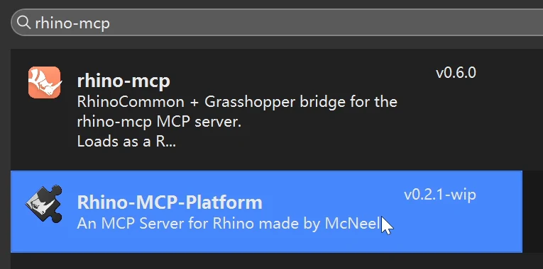
第二步，连接 AI 客户端。
在 Rhino 命令行里输入 MCPConnect，窗口会列出检测到的客户端，点击对应的 Install 就可以配置。下面这张图里，Claude Code 已经显示 Installed，说明装好了；Codex 还没有装。
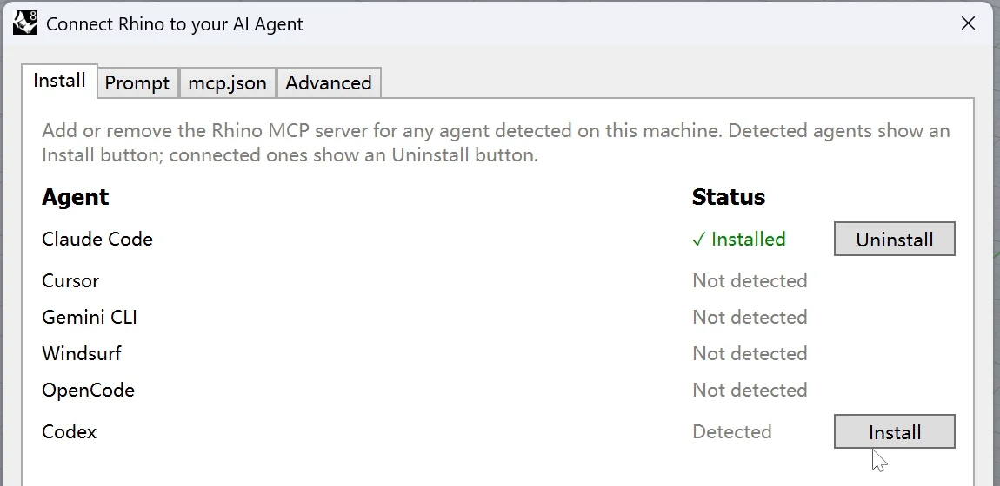
如果你的界面和这里不一样，没有 Install 页面，可以切到 Prompt，复制它生成的配置提示，发给要用的 AI 客户端，让它按提示配置，再重启客户端。版本更新后入口可能会变，文末放了官方说明。
第三步，启动服务，试一下能不能连上。
回到 Rhino，在命令行输入 MCPStart，上方的日志（Log）里会显示 MCP Server 启动在哪个本地端口。把连接信息发给 AI，让它检查一下：
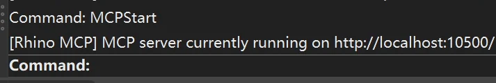
MCP server currently running on http://localhost:10500/ 请帮我连接rhino mcp 并检查连接性
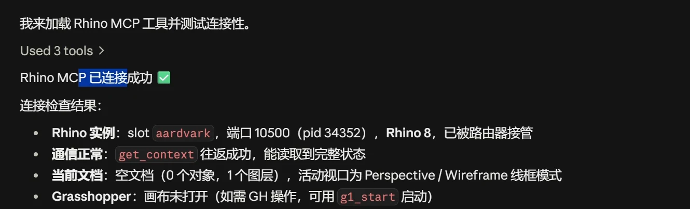
连上之后，可以先让它做一个小东西来测试一下。另外，可以输入 MCPHelp 打开官方文档，查阅说明和更新（可能需要爬墙）。
03第一个例子：照着照片建水壶
先试一个水壶。我把 McNeel 官方示例里的玻璃电热水壶照片发给 Claude Code，要求就一句话：
Model this image in Rhino
我们看一下实际操作时的样子。左边开着 Rhino，右边是 Claude 的聊天和任务窗口。右边能看到它在分析什么、准备怎么建，左边能看到模型逐步生成。不需要把代码复制来复制去，建模操作由它自己调用。
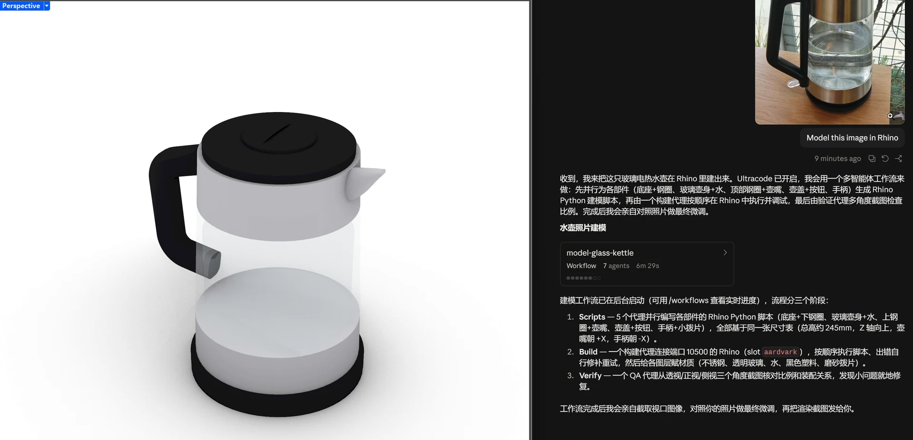
这一轮开了多智能体功能。它先看参考图，把水壶拆成壶身、底座、顶部、手柄等部分，再分别写 Rhino Python 脚本，运行之后生成几何体，最后换几个角度截图检查。等它运行的时候，也可以看看任务列表，有没有一开始就理解错的地方。
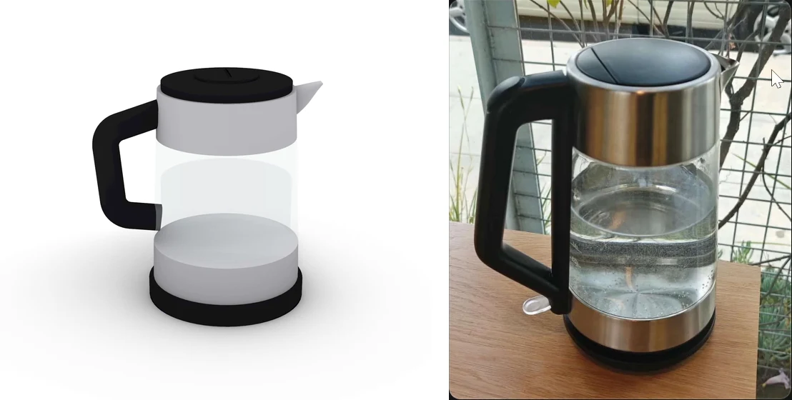
远看还可以，玻璃壶身、黑色手柄和底座都做出来了。但对着原图细看，手柄上下的宽度不对，按钮和一些局部比例也有偏差。不过完全解放双手的建模还是很快乐的。
朋友们可以试着继续改，只需把需求和问题描述清楚。如果只说一句“不像”，它也很难知道我们想改哪儿。模型已经分了图层，如果有些地方自己动手更快，也可以接着改。
04牛来：折腾了半天，效果一般
水壶做完，我想整个活，就再试一个没那么规整的。正好当时《牛来》很火，我给了里面牛牛的参考图，让它照着建模。第一版出来，头、角和身体是都有了，但基本是球体、圆柱这些基础几何拼起来的。对着参考图看一下，造型还是差得挺远。
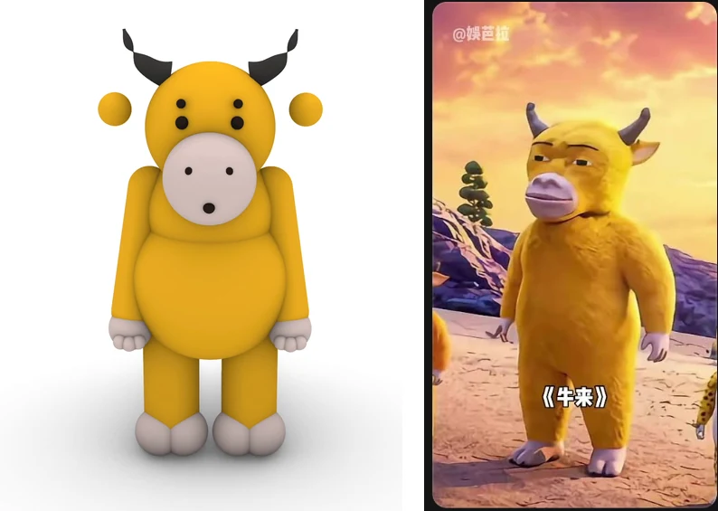
我接着让它用 SubD，想着把形状做得柔软一些。后面又改了好几轮，头、口鼻、眼睛、眉毛、手臂、肚子都动过。比最开始是有进步，但看起来还是差点火候，角色的神态也没做对。这说明模型的水平还是有限，也许 Codex 会表现更好。
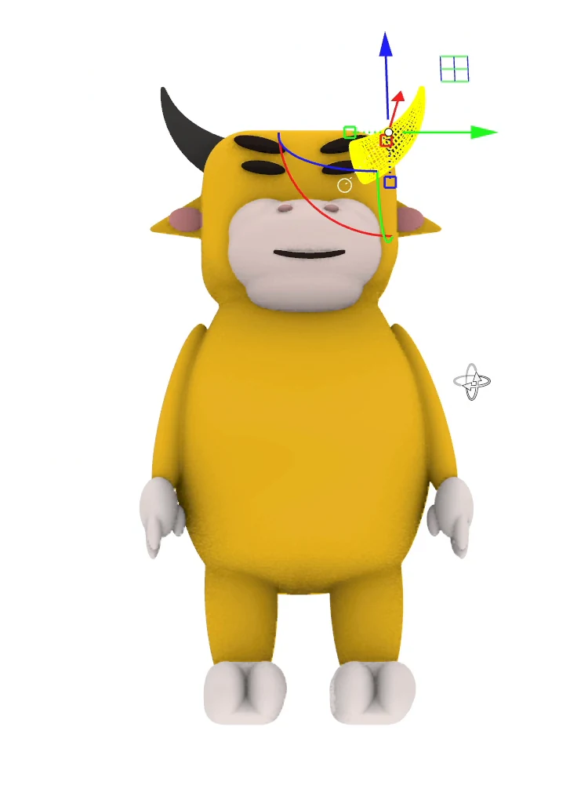
05再试一个旋转楼梯
记得从前有个朋友问我，不用 GH 的话，怎么在 Rhino 里建旋转楼梯。我突然觉得，这还真是个比较常见、又比较 tricky 的建模问题，于是想着试试看，AI 建出来会是什么效果。我当时只给了很笼统的提示词，不过大家可以给更多、更准确的描述，看看效果。
新开文件建一个旋转楼梯
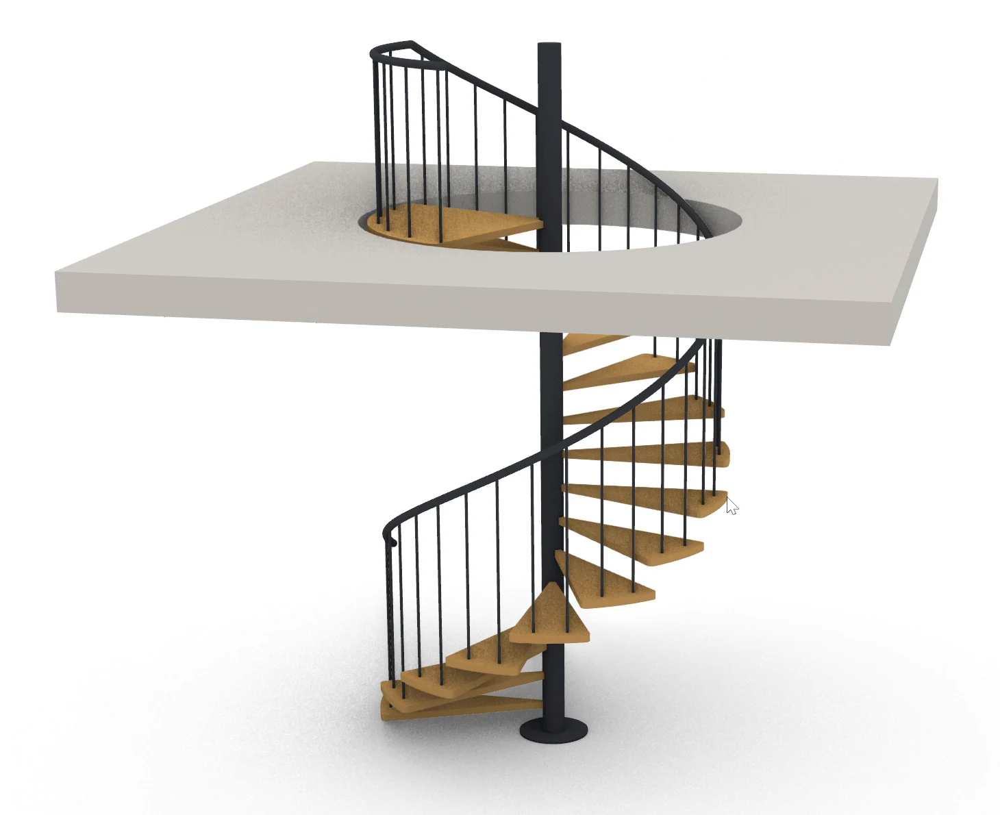
这一轮前后约 19 分钟，里面包括保存上一个文件、生成楼梯和检查结果。楼梯主体做出来了，材质和图层也分好了。不过看平台附近，栏杆的位置有问题，人上楼之后可能就被挡住了。楼梯和平台怎么接、楼板洞口开口方式，这些地方还要继续改。不过 AI 已经建了大部分，感觉手动快速删删改改也没问题了。在实际建模当中，应该还是很有用的。
06接着试 Grasshopper，第一版很乱
楼梯做好之后，我还想改层高、踏步数和旋转角度。如果每次都在聊天里重新说一遍，还是有点麻烦。于是继续让它做成 Grasshopper 文件，把这些参数接到滑块上，之后就可以自己拖着改。
我当时用的 Prompt：
你把这个文件先存一下 然后用GH建旋转楼梯 这样我可以调整参数
它确实把电池和连线都建出来了。但第一眼看到画布，有点头疼：电池挤在一起，线从这边跨到那边。想找一个参数，还得先研究一下它到底放在哪里。
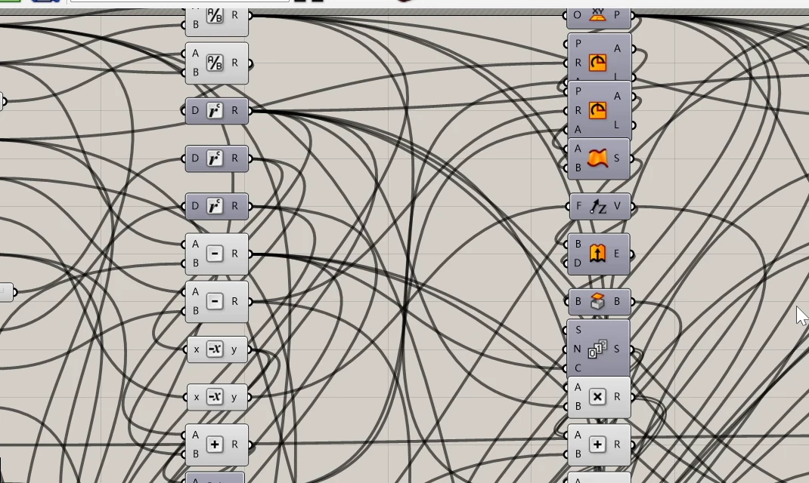
先不管排版，这一版确实能用，而且所有 sliders 都有名称，还是很好调整的。我依次改了层高、踏步数、总旋转角和外半径，观察到 Rhino 里的楼梯都跟着变，说明这个参数化控制流还是很稳定的，没有太大的 Bug。
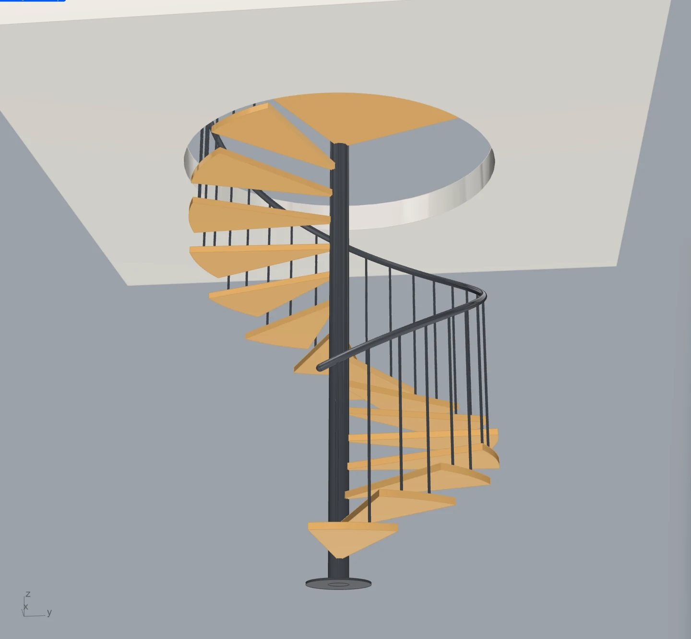
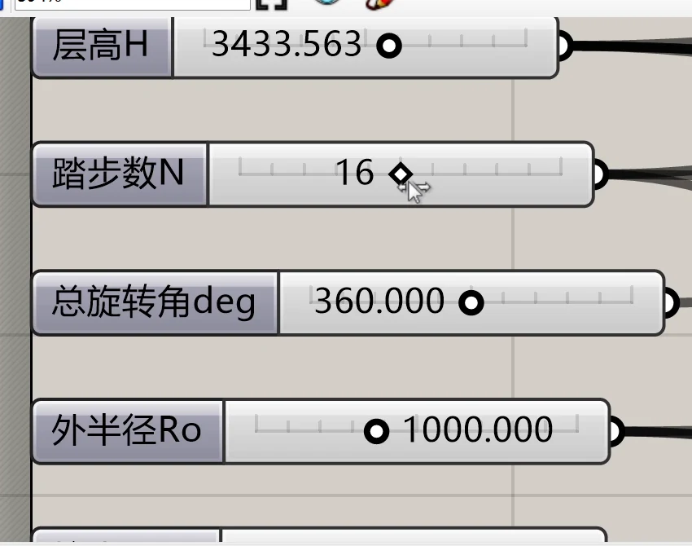
参数能动之后，我就让它整理一下画布。不然过几天再打开，恐怕又要从头看一遍。
你能把gh文件整理一下嘛 现在看着一团乱麻
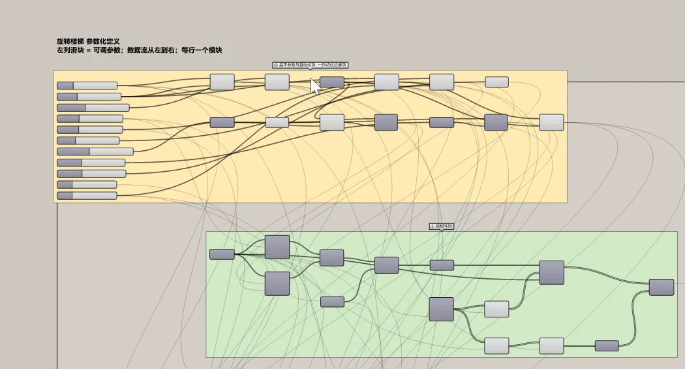
整理后清楚多了。这里让我很震惊，因为它自动地将每个组都打包好了，也写好了注释，甚至能改变连线的显示方式。有些线显示得更浅，这样让整个画布更加整洁，主次明显。我觉得，AI 建模还是应该与 GH 结合，这样比较理想。首先，像 Claude Code 或者 Codex 这些智能体更擅长编程，GH 其实就是图形化编程，所以它们做起来更加得心应手；其次，有参数控制，建出来的模型可以根据需求而改变，不会重复使用大量 tokens 来改一个直接在 Rhino 里建的模型。
07让它在 GH 里写个生命游戏
除了让 AI 一个一个摆电池，还可以让它在 C# 或 Python 组件里直接写脚本，实现更加复杂的算法。我试了经典的算法“生命游戏”（Game of Life）：网格里的每个格子代表一个细胞，每次触发，根据周围细胞的状态计算下一代。
你使用GH中的c#元件写一个Game of life 需要使用persistent variables 并使用trigger激发evolve
这次它用的是 C# 组件，外面接按钮、布尔开关和参数滑块。
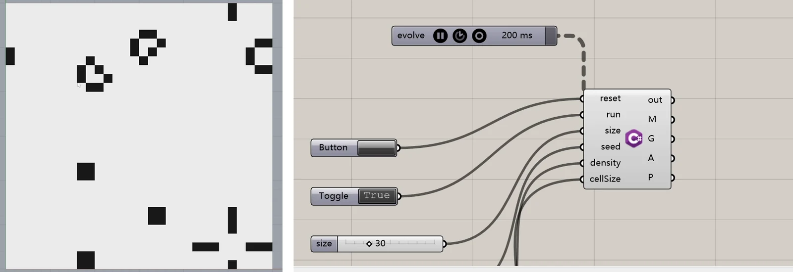
从开始生成脚本到调试好，约 7 分钟，网格就跑起来了，而且运行良好，我很惊叹。打开 C# 组件，也可以看到内部 Script 的初始化、每一代的计算和几何输出分别是怎么写的。对想学脚本但还不太熟的朋友，这种小例子也可以拿来拆着看。
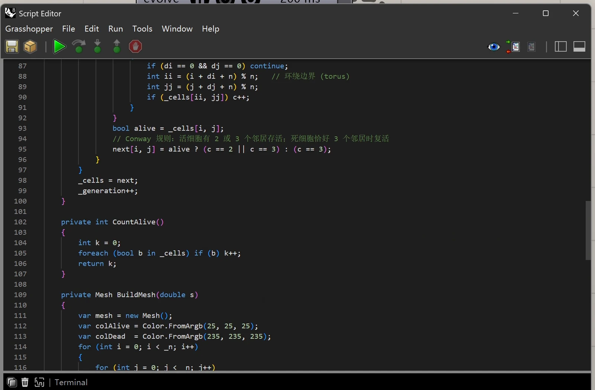
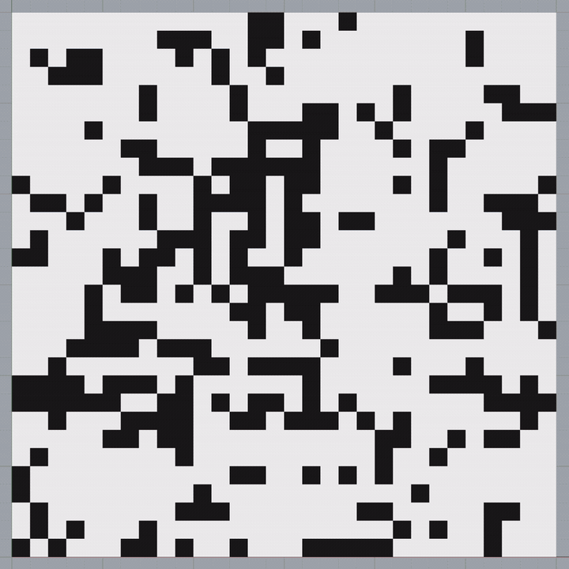
下篇再换几种 AI 试试
这几个例子里，我觉得水壶和楼梯已经可以拿来做初稿，后面再自己改。牛牛就差得比较多，暂时没有达到我想要的效果。我觉得，GH 的参数化和脚本组件，是使用 AI 在 Rhino 里建模的最佳方式。
下篇展示一下我试过的 Codex，以及国产大模型 GLM 和 DeepSeek。本地模型我也装了，不过没有成功让它完成建模，具体卡在哪里，也一起放出来，供大家参考。
官方资料
Hello, friends! A lot has changed. My last update here was six years ago. When I started this WeChat Official Account, I was an undergrad. Now I'm close to finishing my PhD. Along the way I did share some things, but I felt video was more direct, so I posted a series of videos on Bilibili about using C# in Rhino. Now I'm picking the WeChat Official Account back up to write more blog posts, but the main focus will shift from Grasshopper (GH) to coding + AI.
The posts here will mostly be condensed, illustrated versions of each of my upcoming videos. I'll lean on the almighty power of AI to write them quickly, so some parts will inevitably have a bit of that stiff AI tone. But for the sake of spreading knowledge quickly, I think that's acceptable.
Without further ado, this time I want to share how to install Rhino MCP and let an AI agent do the modeling for us in Rhino. First how to install it, then a few examples to see how it does. I tried several: modeling a kettle from a photo, making the cow from Niu Lai (《牛来》), generating a spiral staircase, and using Grasshopper to turn the staircase into a model with adjustable parameters. I tried AIs from both China and abroad, including Claude Code, Codex, GLM and DeepSeek, and at the end I also messed around with a local model (not very successful; local deployment still has a long way to go). You can compare the results yourselves.
There's a lot of content, so I've split it into two parts. Part 1 covers installation and a few examples with Claude; Part 2 looks at other AIs. If you've already installed it, you can skip straight to section 3 for the kettle.
01First, what MCP does
MCP stands for Model Context Protocol. It's really a set of communication rules that lets an AI agent talk to other programs, and through that, get them to do things. This Rhino workflow starts a local server, and the AI and Rhino talk to each other through a local address, much like visiting a website. If your copy of Rhino is cracked by blocking it with a firewall, this feature may be restricted. Once the AI agent and Rhino are connected through the MCP bridge, the agent can call Rhino's tools directly, read the current model, run modeling operations, and even switch views, take screenshots, and keep revising based on the results. We describe what we want in the chat window, and the model gets generated automatically in Rhino, sparing everyone the pain of modeling.
Get Rhino 8 ready first. Here I'll demo with Fable 5 / 5.1 in Claude Code, and for some tasks I also turned on Ultracode's multi-agent feature, which means letting several AIs split up the work. All the times below were measured with this setup.
02Installation and connection
Step 1: install the Rhino plugin.
In the Rhino command line, type PackageManager, search for Rhino-MCP, and find Rhino-MCP-Platform. Note that the search results include plugins with very similar names, so look for made by McNeel in the description. Click Install, and restart Rhino once it's installed.
Step 2: connect the AI client.
In the Rhino command line, type MCPConnect. The window lists the clients it detects; click the matching Install button to configure one. In the image below, Claude Code already shows Installed, which means it's set up; Codex hasn't been installed yet.
If your interface looks different and there's no Install page, switch to Prompt, copy the configuration prompt it generates, and send it to the AI client you want to use. Have the client configure itself following that prompt, then restart the client. Where this option lives may change in future versions; I've linked the official instructions at the end.
Step 3: start the service and test the connection.
Back in Rhino, type MCPStart in the command line. The Log above will show which local port the MCP Server started on. Send the connection info to the AI and have it check:
MCP server currently running on http://localhost:10500/ please help me connect to rhino mcp and check the connection
Once connected, you can have it make something small as a test. You can also type MCPHelp to open the official docs for instructions and updates (you might need a VPN to get past the Great Firewall).
03First example: modeling a kettle from a photo
Let's start with a kettle. I sent Claude Code the photo of the glass electric kettle from McNeel's official examples, and the request was just one line:
Model this image in Rhino
Here's what it looks like in practice. Rhino is open on the left, and Claude's chat and task window is on the right. On the right you can see what it's analyzing and how it plans to build; on the left you can see the model take shape step by step. No copying code back and forth: it calls the modeling operations itself.
This round had the multi-agent feature on. It first looked at the reference image and broke the kettle into parts: body, base, top, handle and so on. Then it wrote a Rhino Python script for each, ran them to generate the geometry, and finally took screenshots from a few angles to check. While it's running, you can also look at the task list to see whether it misunderstood anything from the start.
From a distance it's not bad: the glass body, black handle and base are all there. But compare it closely with the original and the handle's width at the top and bottom is wrong, and the button and some local proportions are off too. Still, modeling completely hands-free is a lot of fun.
You can try to keep revising it; just describe what you want and what's wrong clearly. If you only say "it doesn't look like it," it will have a hard time knowing what you want changed. The model is already split into layers, so if some parts are faster to fix by hand, you can carry on yourself.
04Niu Lai: a lot of fiddling, mediocre results
After the kettle, I wanted to have some fun, so I tried something less regular. Niu Lai happened to be really popular at the time, so I gave it a reference image of the cow character and asked it to model from that. In the first version, the head, horns and body were all there, but it was basically spheres, cylinders and other basic geometry stuck together. Compared with the reference, the form was still pretty far off.
Next I asked it to use SubD, hoping to make the shape softer. After that I revised it for several more rounds, working on the head, muzzle, eyes, eyebrows, arms and belly. It was better than the first version, but still didn't quite get there, and the character's expression wasn't right either. This shows the model's ability is still limited; maybe Codex would do better.
05Next, a spiral staircase
I remember a friend once asked me how to model a spiral staircase in Rhino without GH. It suddenly struck me that this really is a fairly common and rather tricky modeling problem, so I wanted to try it and see what the AI would come up with. At the time I gave only a very vague prompt, but you can give it a fuller, more precise description and see how it does.
open a new file and build a spiral staircase
This round took about 19 minutes in total, including saving the previous file, generating the staircase and checking the result. The main body of the stair got built, and the materials and layers are sorted out properly. But near the landing, the railing is in the wrong place: once you walk up, it might block your way. How the stair meets the landing and how the floor opening is cut still need more work. Still, the AI has built most of it, and I feel some quick manual deleting and tweaking would take care of the rest. In real modeling work, this should still be quite useful.
06Then Grasshopper: the first version was a mess
Once the staircase was done, I also wanted to change the floor height, number of steps and rotation angle. Re-describing everything in chat each time would still be a bit of a hassle. So I had it go further and make a Grasshopper file, wiring these parameters to sliders so I could just drag them and make changes myself.
The prompt I used at the time:
save this file first then build the spiral staircase in GH so I can adjust the parameters
It did build all the components and wires. But my first look at the canvas gave me a bit of a headache: components crammed together, wires running from one side to the other. To find a parameter, you'd first have to work out where it was even placed.
Layout aside, this version does work, and all the sliders are named, so it's easy to adjust. I changed the floor height, number of steps, total rotation angle and outer radius one by one, and watched the staircase in Rhino follow along each time, which shows this parametric setup is quite stable, with no major bugs.
Once the parameters worked, I asked it to tidy up the canvas. Otherwise, if I opened it again in a few days, I'd probably have to read through the whole thing from scratch.
can you tidy up the gh file? right now it looks like a tangled mess
It's much clearer after the cleanup. This honestly blew me away, because it automatically organized everything into groups, wrote the annotations, and even changed how the wires are displayed. Some wires are shown lighter, which makes the whole canvas tidier, with a clear hierarchy. I think AI modeling really should be combined with GH; that's the more ideal setup. First, agents like Claude Code or Codex are better at programming, and GH is really just visual programming, so it comes more naturally to them. Second, with parametric control, the model you build can change to fit your needs, instead of burning lots of tokens over and over to revise a model built directly in Rhino.
07Having it write a Game of Life in GH
Besides having the AI place components one by one, you can also have it write scripts directly inside a C# or Python component to implement more complex algorithms. I tried the classic "Game of Life" algorithm: each square in the grid represents a cell, and on each trigger, the next generation is computed from the states of the surrounding cells.
use the c# component in GH to write a Game of life, it needs to use persistent variables and use a trigger to fire evolve
This time it used a C# component, with a button, a Boolean toggle and parameter sliders wired into it.
It took about 7 minutes from starting to generate the script to finishing debugging, and the grid was up and running, and working well. I was amazed. Open the C# component and you can also see how the script inside handles initialization, each generation's computation, and the geometry output. For friends who want to learn scripting but aren't very familiar with it yet, small examples like this are good to take apart and study.
In Part 2: trying a few other AIs
Of these examples, I think the kettle and the staircase can already serve as first drafts that I can then revise myself. The cow fell quite far short; for now, it isn't what I wanted. I think GH's parametrics and script components are the best way to use AI for modeling in Rhino.
In Part 2 I'll show Codex, which I also tried, as well as the Chinese models GLM and DeepSeek. I also installed a local model, but didn't manage to get it to finish the modeling. I'll share exactly where it got stuck too, for your reference.